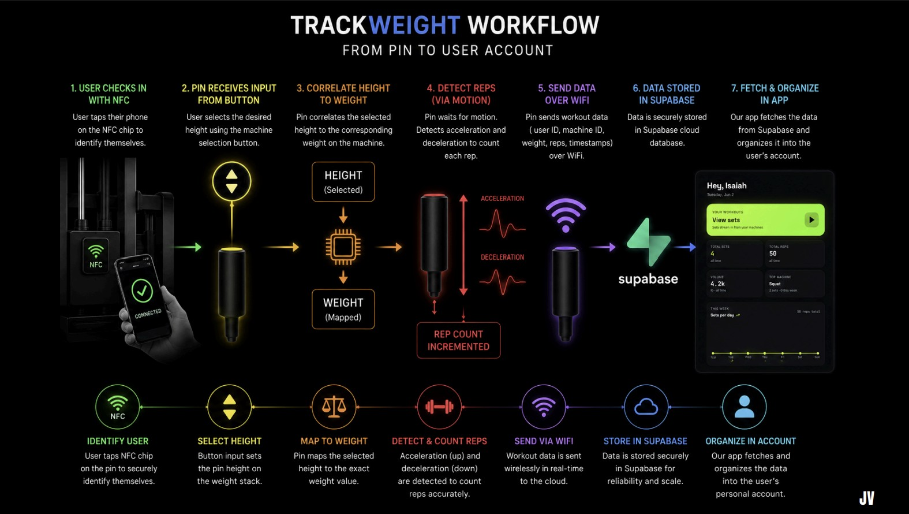
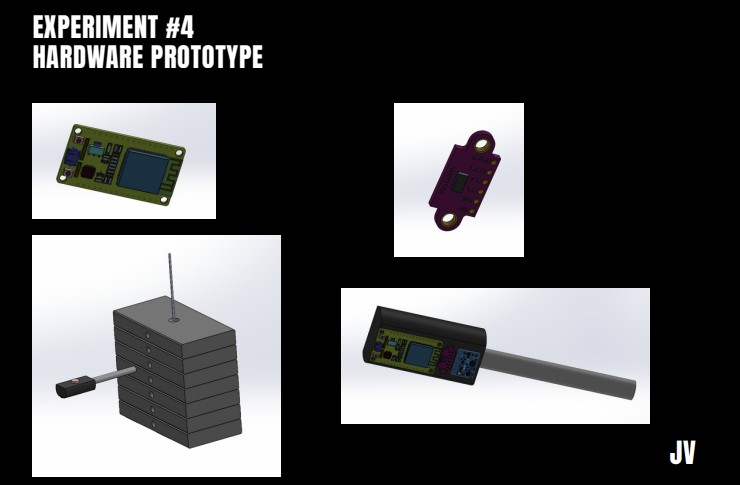
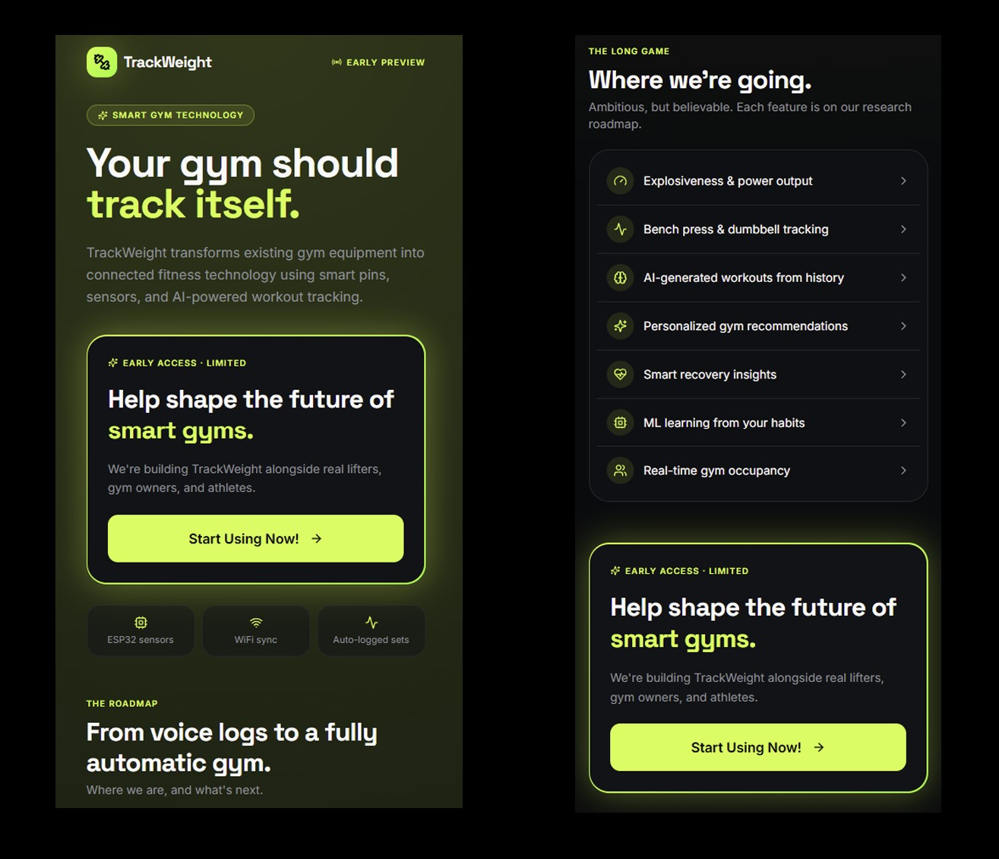

TrackWeight Smart Gym Tracking Device

Media / Documentation
TrackWeight was a product-development and embedded-systems project focused on making workout tracking automatic for weight-stack gym machines. The project combined customer discovery, market validation, embedded hardware, sensor integration, WiFi communication, cloud storage, and dashboard concepts.
Note: The final presentation button will work after you upload the PDF to
trackweight/trackweight-final-presentation.pdf in your portfolio repository.
Project Images




TrackWeight is a smart gym tracking prototype designed to automatically record the selected weight, rep count, machine used, and workout session data from weight-stack exercise machines. The goal was to reduce the friction of manual workout logging by using embedded hardware, sensors, WiFi communication, and a cloud database workflow.
Project Snapshot
| Project Type | Embedded systems, mechatronics, IoT, product development, customer validation, fitness technology |
| Team | Albert Beerbower, Jireh Velasquez, Isaiah Guerrero |
| My Role | Embedded software development, ESP32 hardware code, sensor integration, rep-counting logic, weight-detection logic, WiFi/Supabase communication, and prototype debugging |
| Hardware | ESP32 microcontroller, VL53L0X time-of-flight sensor, MPU6050 IMU, weight-stack machine prototype, WiFi communication |
| Software | MicroPython, ESP32, I2C, WiFi networking, HTTP requests, Supabase REST API, NTP timestamping |
| Status | Working proof-of-concept: weight identification, rep detection, ESP32 WiFi transmission, cloud database integration, and dashboard concept demonstrated |
Overview
Many gym users want to track their progress, but manual workout tracking is often tedious and disruptive during workouts. TrackWeight was developed to remove that friction by automatically detecting the selected weight and counting repetitions on a weight-stack machine. Instead of requiring the user to manually enter every set, the device records workout data and sends it to a cloud database.
The final product concept was a gym-installed tracking system. A gym would purchase or deploy TrackWeight hardware on machines, members would gain automatic tracking, and the gym could use the collected data to understand machine utilization, user engagement, and workout trends.
Problem / Goal
The original problem was that users want to track sets, reps, and weight, but existing solutions require too much manual effort. The team validated that the strongest value came from making tracking automatic and easy enough that users would not have to interrupt their workout.
The technical goal was to build a proof-of-concept device that could detect the selected weight, count reps, and send a completed workout event to a database. The product goal was to validate whether gym users and gym operators cared enough about automatic tracking to support further development.
My Role and Impact
My main contribution was developing the embedded hardware code for the ESP32 prototype. I wrote and integrated the software that connects the time-of-flight sensor, IMU, button interface, WiFi connection, timestamping, and Supabase upload workflow into one working system.
- Developed the main ESP32/MicroPython program flow for workout sessions.
- Integrated the VL53L0X time-of-flight sensor to estimate weight-stack pin position.
- Integrated the MPU6050 IMU to detect motion and count repetitions.
- Created a formula-based weight mapping module to convert measured distance into stack slot and selected weight.
- Implemented BOOT-button logic to start and stop workout sessions.
- Added WiFi connection, reconnection handling, NTP timestamping, and Supabase upload logic.
- Structured the code into separate modules for the IMU, TOF sensor, weight mapping, and main program.
- Debugged sensor readings, threshold behavior, WiFi connection reliability, and completed workout data payloads.
Product and Customer Validation
The project was not only a hardware prototype. The team also completed customer discovery, surveys, landing-page testing, and business-model iteration to determine whether the product solved a real problem. The team initially focused on gym members, then shifted toward gyms and fitness facilities as a stronger customer segment because gym owners could benefit from utilization data and member-retention analytics.
| Validation Metric | Result |
|---|---|
| Interest in automatic workout tracking | 87.8% interested or very interested |
| Willingness to pay | 85.4% would pay or potentially pay $5/month |
| Weight-stack machine usage | 85.4% use weight-stack machines for at least half of workouts |
| Waitlist / email interest | 39% joined waitlist or provided email |
| Industry feedback | Gym operators showed interest in machine utilization and member-retention analytics |
System Workflow
The intended TrackWeight workflow moves from machine interaction to stored workout data. The user starts a session, the device detects the selected weight, the IMU counts repetitions, and the ESP32 sends the completed set to Supabase for later display in an app or dashboard.
- User starts a workout session using the device interface.
- The time-of-flight sensor reads the selector-pin position.
- The measured distance is mapped to a weight-stack slot and selected weight.
- The IMU detects weight-stack motion and counts completed reps.
- The ESP32 connects to WiFi and sends the workout data to Supabase.
- The data can be organized into a user account or dashboard.
Technical Work
Embedded Session Logic
The main ESP32 program controls the full workout session. A BOOT-button press starts the session, the device reads the selected weight, the IMU counts reps, and the completed workout set is printed locally and sent to Supabase when WiFi is available.
- Initialized I2C communication for the VL53L0X and MPU6050 sensors.
- Used BOOT-button input to start a workout session and manually stop rep counting.
- Averaged multiple TOF samples to reduce distance noise before estimating weight.
- Calibrated an IMU baseline before counting reps.
- Used a state machine to detect movement and return-to-baseline behavior for rep counting.
- Ended sessions after manual stop or a timeout with no new reps detected.
Weight Detection
The selected weight is estimated from the distance between the sensor and the weight-stack selector position. The code uses a calibrated home distance, plate thickness, starting weight, and weight step to calculate the selected stack slot.
| Home distance | Baseline distance when the selector is at the starting position |
| Plate thickness | Distance between weight-stack positions |
| Stack slot | Rounded index calculated from distance change divided by plate spacing |
| Selected weight | Starting weight plus slot index multiplied by weight step |
Rep Detection
The rep counter uses filtered Z-axis acceleration from the MPU6050. The system first records a baseline while the machine is still. A repetition is counted when the weight stack moves beyond a threshold and then returns near the baseline after a minimum time interval. This reduces false counts from noise, vibration, or very small movements.
Cloud Data Upload
After a workout set is complete, the ESP32 sends the workout event to Supabase using an HTTP POST request. The data payload includes the machine name, rep count, user slot, selected weight, and timestamp.
- Used WiFi station mode to connect the ESP32 to a network.
- Added reconnection logic in case WiFi disconnected before upload.
- Used NTP time sync to generate UTC timestamps.
- Sent workout events to a Supabase REST endpoint.
Code Repository Structure
The TrackWeight repository is organized into an operational folder and an iterations folder. The operational folder contains the final working prototype code, while the iterations folder documents earlier scripts used during sensor testing, WiFi testing, display testing, and system debugging.
| Repository Section | Description | Link |
|---|---|---|
| operational/ | Final ESP32/MicroPython code for sensor integration, rep counting, weight detection, WiFi communication, and Supabase upload | View |
| iterations/ | Earlier development scripts used for IMU testing, TOF testing, WiFi testing, display testing, and prototype debugging | View |
| README.md | Project overview, system architecture, setup notes, calibration values, and prototype status | View |
Tools Used
- Embedded Hardware: ESP32, VL53L0X time-of-flight sensor, MPU6050 IMU, I2C communication
- Programming: MicroPython, modular sensor drivers, state-machine logic, filtering, calibration constants
- Cloud / Data: WiFi networking, HTTP POST requests, Supabase REST API, NTP timestamps
- Product Development: customer interviews, surveys, landing-page testing, value proposition canvas, business model iteration
- Prototype Validation: rep detection, weight identification, real-time data transmission, dashboard concept
Results / Status
The TrackWeight prototype demonstrated the core functions needed for an automatic workout tracking system. The hardware prototype was able to identify selected weight, count reps, transmit data over WiFi, store data in Supabase, and support a dashboard concept for organizing workout information.
The team also validated customer interest through interviews, surveys, landing-page testing, and gym-industry feedback. Remaining risks include battery life, manufacturing cost, durability, scaling, and adoption by gyms or users.
Challenges and Debugging
- Sensor calibration: weight detection depended on accurate home distance, plate spacing, and sensor placement.
- Rep-count reliability: the IMU threshold had to distinguish real repetitions from vibration and small movements.
- WiFi reliability: the ESP32 needed connection and reconnection logic to avoid losing completed workout data.
- Database compatibility: the payload had to match the Supabase table structure.
- Product fit: customer interviews showed that ease of use mattered as much as technical functionality.
Key Takeaways
This project showed me how embedded systems can be connected to real product needs. The technical prototype was important, but the strongest lesson was that the device had to fit naturally into a gym user's workout. If tracking required too much manual effort, users would not adopt it, even if the hardware worked.
The project also strengthened my experience with sensor integration, MicroPython development, ESP32 networking, cloud-connected data logging, and product validation. TrackWeight required both engineering execution and customer-focused iteration.